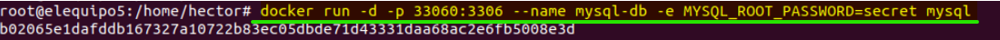

1.- Para poder instalar Docker necesitamos instalar algunos paquetes de requisitos previos que permitan
a apt usar paquetes através de HTTPS

1.- Para poder instalar Docker necesitamos instalar algunos paquetes de requisitos previos que permitan
a apt usar paquetes através de HTTPS
2.- El siguiente paso es el añadir la clave GPG, que nos permite instalar Docker y actualizar el Sistema.

3.- Tenemos que instalar el repositorio de las fuentes para tener conexión con Docker.

4.- Ahora hacemos un apt-update para que actualice las ligas.

5.- Vamos a crear un pequeño cache para guardar las politicas de Docker, eso se crea con el comando de la imagen:

6.- Ahora es momento de instalar Docker con el comando de abajo:

7.- Para poder ver si Docker esta en funcionamiento ejecutamos el comando sudo systemctl status docker, si esta corriente
o esta en ejecucion nos debe aparecer Active: active (running)

8.- para verificar si Docker puede acceder a imagenes y descargarlas de Docker Hub, escribimos lo siguiente:

9. Clic en Dispositivos->Inseertar imagen de CD de la << Guest additions >>...
9.- Al ejecutar el comando anterior dicho, nos manda el mensaje hello from docker!!, la cual quiere decir que si esta en funcionamiento.
ha este run hello-world se le conoce como la primera imagen de docker.

-------- instalar el servicio MySql desde Docker --------
11.- Para instalar o jalar el Mysql, ejecutamos el comando docker pull mysql.

12.- Para saber cuales son mis imagenes ejecutamos docker images donde aparecerá los repositorios y sus IDs, y aqui podemos ver que el
repositorio hello-word, que a pesar de ser solo un mensaje, funge como una imagen para docker.

1.- Vamos a crear un contenedor en Docker para Mysql
2.- Checamos que el contenedor se haya creado satisfactoriamente.

3.- Ahora vamos a asigarle el contenedor y una contraseña.
4.- Una vez teminada el paso anterior, vamos a ingresar a nuestro contenedor con el comando de abajo e ingresando la contraseña que se le coloc anteriormente.
He ingresaremos a nuestro base de datos y se generara nuestro ID. Para comprobar que en verdad estamos en mysql vamos a ver una tabla que este en el mysql.
5.- Como estamos adentro de Mysql podemos crear una tabla y comprobar que se haya creado corectamente haciendo que nos muestre la tabla creada.
6.-Salimos de Mysql y nos cambiamos de directorio.
7.- Realizamos el siguiente comando para poder conectarnos.
8.- Detenemos docker con el siguiente comando:
9.- Cuando ya nos vayamos a conectar con docker tenemos que configuar la red de la maquina. Para que comienze a repartir la ips del servidor
y poder conectarnos y realizar las otras configuraciones que siguen.
9.1
10.- Ahora checamos que nuestra ip, con el siguiente comando:
10.- Vamos a entrar a nuestro Mysql desde Ubuntu, no entrando por el contenedor y vamos a crear una base llamada almacen:
11.- Después vamos a entrar a la base de datos de almacen y crear nuestra tabla de datos llamada productos.